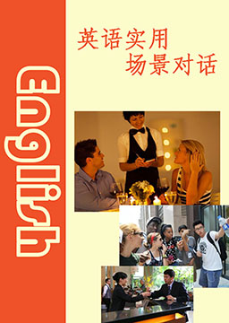
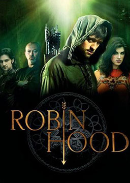
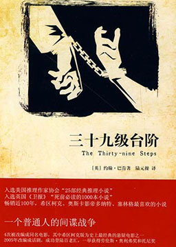
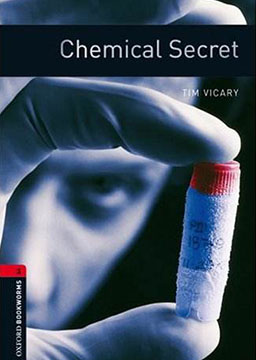
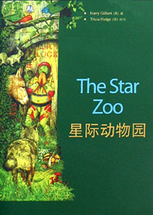
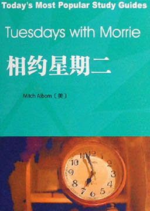
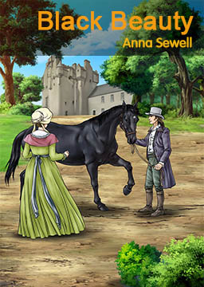
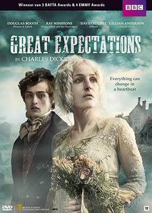
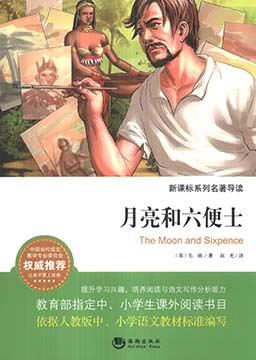

双语小说
收录中英文双语小说300多部，包括世界经典名著、社会小说、悬疑小说等短篇和长篇小说，可按照初中难度、高中难度和大学难度分类阅读，每部小说都有分段中英文对照，点击单词可查看中文翻译。

英语实用场景对话 (Scene Dialogue)
作者：未知 (unknow) [未知]
生活中偶尔会遇到外国人并跟其交流，是否突然想说的时候确不知道怎么说了，或总感觉说出来不那么顺口。简单实用的日常生活英语场景对话能够快速让您遇到相同情况的时候不那么手足无措。对提高英语实际的应用有很大的帮助。经常练习更能记忆深刻、运用自如。真正达到脱口而出的效果。
侠盗罗宾汉 (Robin Hood)
作者：约翰·埃斯科特 (John Escott) [英国]
国王理查率领英国军队参加十字军东征，罗宾汉也随军前行。可是当战争结束，罗宾汉从战场返回家乡的时候，发现自己的庄园和财产已经被诺丁汉郡治安官以莫须有的罪名没收。此时，英国正在被借着狮心王东征而趁机弄权的约翰王子所统治，他的横征暴敛让人民苦不堪言。为此，罗宾汉聚集了一帮绿林好汉，凭借着自己的机智和勇敢，带领大家劫富济贫，对抗昏君的暴政。
三十九级台阶（简化版） (The Thirty-nine Steps)
作者：约翰·巴肯 (John Buchan) [英国]
从南部非洲返回英国生活的理查德·汉内回到他在伦敦的寓所，感到百无聊赖。然而，那天晚上他的公寓中来了一位不速之客。这名叫斯卡德的美国人发现有个代号为“黑石”的外国间谍组织，正准备刺杀首相从而引起混乱，然后窃取一份重要的国防军事情报。斯卡德因为追踪他们的成员，被对方发现后身处杀人灭口的险境。为阻止国防绝密文件落入德国人之手，与德国间谍展开了一场惊心动魄的搏斗。
化学秘密（简化版） (Chemical Secret)
作者：蒂姆·维卡里 (Tim Vicary) [英国]
一个失业的中年生物学家，在一个化工厂找到了一个检验的工作。他重新富裕，又买了大房子游艇，一切中产阶级的生活又回来了，这时他检测出，他们新生产的油漆对环境河流大海造成污染，海中的生物海豹已出现畸形，他强烈要求生产净化机器，防止污染，老板当然利字当头，不肯，认为他带来了这个镇的富裕，提供了就业岗位。使大家富足，吸引大批的人才，何必为区区之事，又不会有人去喝海里的水 。他退缩了，并在当地报纸揭露此事后以生物学家的身份证明没有如此严重的后果。后来他的怀孕的女儿溺水误喝海中的水，他生活在提心吊胆之中，小说就此结束。
小王子 (The Little Prince)
作者：安托万·德·圣·埃克苏佩里 (Antoine de Saint-Exupéry) [法国]
法国作家安托万·德·圣·埃克苏佩里于1942年写成的著名儿童文学小说。第77届世界科幻大会开幕仪式暨1944追授雨果奖颁奖典礼上，《小王子》斩获“追授雨果奖”最佳中篇奖。2020年4月，列入《教育部基础教育课程教材发展中心 中小学生阅读指导目录（2020年版）》。内容简介：飞行员讲述了六年前他因飞机故障迫降在撒哈拉沙漠遇见小王子的故事。神秘的小王子来自另一个星球。飞行员讲了小王子和他的玫瑰的故事。小王子为什么离开自己的星球；在抵达地球之前，他又访问过哪些星球。他转述了小王子对六个星球的历险，他遇见了国王、爱虚荣的人、酒鬼、商人、点灯人、地理学家、蛇、三枚花瓣的沙漠花、玫瑰园、扳道工、商贩、狐狸以及我们的叙述者飞行员本人。
星际动物园（简化版） (The Star Zoo)
作者：哈里·吉尔伯特 (Harry Gilbert) [英国]
人类是地球这颗行星上最成功的动物。所谓成功，是指在与其他动物的斗争中取得的成功。在争夺食物或土地的问题上，我们人类战无不胜。我们砍伐树木，修建房屋或工厂，自己种植粮食。其他动物不得不去另找其他的地方生活――如果它们能找着的话。
相约星期二 (Tuesdays with Morrie)
作者：米奇·阿尔博姆 (Mitch Albom) [美国]
米奇·阿尔博姆是美国的一位体育专栏的主持人，莫里·施瓦茨是他在大学里曾给予过他许多思想的教授，在米奇毕业十五年后的一天，他偶然得知莫里·施瓦茨身患了绝症,而且来日无多，那是一种类似于我们所相当熟悉《时间简史》的作者斯蒂芬·霍金所患疾病，这时老教授所感受的不是对生命即将离去的恐惧，而是希望把自己许多年来思考的一些东西传播给更多的人，于是老人唯一的学生米奇·阿尔博姆，相约每个星期二上课，在以后的十四个星期里，米奇每星期二飞越七百英里到老人那儿去上课，在这十四个星期里，他们聊到了人生的许多组成部分，如何面对他人，如何面对爱，如何面对恐惧，如何面对家庭，以及感情及婚姻，金钱与文化，衰老与死亡，最后一堂课便是莫里老人的葬礼，整个事情的过程，以及这十四堂课的笔记便构成了这本《相约星期二》。
黑骏马（简化版） (Black Beauty)
作者：安娜·塞维尔 (Anna Sewell) [英国]
黑骏马的一生是维多利亚时期各种马的缩影，当过人们的坐骑，在乡间拉过货车，还在伦敦拉过出租马车。小时候，妈妈就告诉他：马一生命运的好坏全得靠运气，遇上好的主人就是他的福气，遇上虐待自己的主人就只好自认倒霉。长大后，黑骏马遇到过好人，也遇到过虐待他的人。他先是被卖给善待马的戈登老爷当坐骑；后来又被卖给了W伯爵，那可恶的勒马缰绳成为他最讨厌的东西，也是所有马儿的不幸；拉货车不仅消耗大量的体力，还要受赶车人的鞭打；拉出租马车时，因为人们错误的驾车方式，受尽折磨。最后，黑骏马终于找到了一个善待自己的家，可以安度晚年。
远大前程（简化版） (Great Expectations)
作者：查尔斯·狄更斯 (Charles John Huffam Dickens) [英国]
又译《孤星血泪》，主人公皮普从小父母双亡，依靠性格暴戾的姐姐抚养长大，和亦师亦友的姐夫乔学习铁匠工作，安于过着下等人的生活。偶然的机会被选进镇上萨提斯庄园，受雇于有钱的贵妇郝维辛，遇见了年轻高傲的艾斯黛拉。在内心阴霾的郝维辛小姐的层层暗示引导下，皮普爱上了艾斯黛拉，思想发生了转变，开始想要为了成为上等人而努力。恰巧年少时期搭救的一名逃犯为了报恩暗中资助皮普，使他有机会学习上等教育，进入上流社会。可惜命运弄人，就在皮普认为有资格与艾斯黛拉平等恋爱的时候，一系列的转折让皮普的“远大前程”瞬间幻灭，并最终让皮普回归到现实。展现了皮普跌宕起伏的成长经历和狄更斯一生经历的深刻认知。
月亮和六便士 (The Moon and Sixpence)
作者：威廉· 萨默赛特·毛姆 (William Somerset Maugham) [英国]
英国小说家威廉· 萨默赛特·毛姆的创作的长篇小说，成书于1919年。作品以法国印象派画家保罗·高更的生平为素材，描述了一个原本平凡的伦敦证券经纪人思特里克兰德，突然着了艺术的魔，抛妻弃子，绝弃了旁人看来优裕美满的生活，奔赴南太平洋的塔希提岛，用画笔谱写出自己光辉灿烂的生命，把生命的价值全部注入绚烂的画布的故事。内容简介：每个人都只看到脚下的六便士，只有他抬头看到天上的月亮。作品以法国印象派画家保罗·高更的生平为素材，描述了一个原本平凡的伦敦证券经纪人思特里克兰德，突然着了艺术的魔，抛妻弃子，绝弃了旁人看来优裕美满的生活，奔赴南太平洋的塔希提岛，用圆笔谱写出自己光辉灿烂的生命，把生命的价值全部注入绚烂的画布的故事。贫穷的纠缠，病魔的折磨他毫不在意，只是后悔从来没有光顾过他的意识。作品表现了天才、个性与物质文明以及现代婚姻、家庭生活之间的矛盾，有着广阔的生命视角，用散发着消毒水味道的手术刀对皮囊包裹下的人性进行了犀利地解剖，混合着看客讪笑的幽默和残忍的目光。